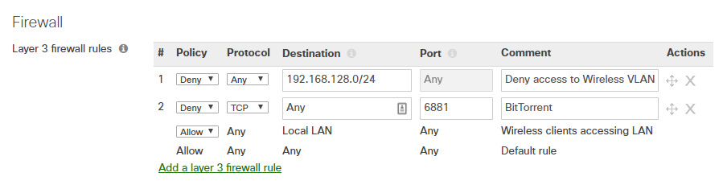
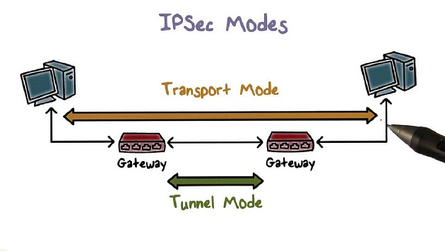
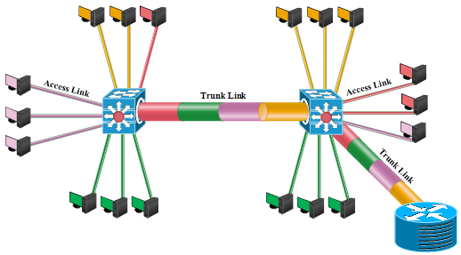

Isolation methods in networks
Izradile: Mateja Cindrić, Marina Bulić
Sadržaj |
METODE IZOLACIJE U MREŽAMA
UVOD
Računalo koje sadrži osjetljive podatke odnosno računalo koje bi trebalo biti pristupačno samo određenom krugu ljudi bi trebalo biti iza zaključanih vrata ili bez mrežnog pristupa radi sigurnosti. Postoje razni načini izolacije koji mogu biti izvedeni na sustavu, od jednostavnog vatroštita do totalne fizičke izolacije. U nastavku će biti objašnjene sljedeće metode izolacije: Firewalling, IPSec, VLAN i Clean room isolation sa naglaskom na VLAN i u teoretskom i praktičnom dijelu.
FIREWALL (VATROŠTIT, VATROZID, SIGURONOSNA ZAŠTITNA STIJENA)
Firewall je zaštita računala koja obavlja filtriranja, analizu i provjeru paketa podataka. Izolira internu mrežu organizacije od Interneta blokiranjem i zabranom prometa prema pravilima koje korisnik sam određuje. Može biti softverski(programski) ili hardverski(sklopovski). Softverski firewall štiti jedno računalo, a hardverski omogućuje zaštitu čitave mreže ili određenog broja računala. Hardverski softver je također računalo, ali obično bez tvrdog diska, grafičke kartice, a sastoji se obično od procesora, memorije i sabirnice.
Odluka o prosljeđivanju/odbacivanju paketa se može temeljiti na:
- izvorišnoj ili odredišnoj IP adresi
- TCP/UDP izvorišnom i odredišnom portu
- ICMP tipu poruke
- TCP SYN i ACK bitovima

Slika 1. Postavljanje pravila
Postoje tri tipa vatrozida:
{kind=link}
- filtri paketa bez praćenja stanja
- filtri paketa sa praćenjem stanja (prati status svake TCP veze)
- aplikacijski posrednik- (filtrira pakete na aplikacijskoj razini)
Ukratko, vatrozid sprečava napade uskraćivanja usluga (SYN flooding), ilegalne promjene/pristup unutrašnjim podacima te dopušta samo autorizirani pristup unutar mreže.
IPsec
Mrežni siguronosni mehanizam koji radi na razini paketa odnosno skup protokola kojim se osigurava sigurnost IP komunikacije. Osnovna namjena IPSec-a je mogućnost uspostave sigurne komunikacije između dva računala preko nesigurnog medija kao što je Internet ili lokalna mreža. IPsec usluge omogućavaju integritet podataka, autentifikaciju izvorišta, sprečavanje napada ponavljanjem poruka i povjerljivost.
Postoje dva načina rada:
a) transportni način rada
Enkriptira se samo teret, a postoji za manje opterećenje mreže. IPSec zaglavlje se dodaje nakon IP zaglavlja,a sadrži siguronosne informacije, SA identifikator, podatke za provjeru integriteta korisnog tereta.
b) tunelski način rada
Enkriptira se teret i zaglavlje. Kompletni IP paket je stavljen kao teret u novi IP paket te postoje dva para izvorišnih i odredišnih adresa.

Slika 2. Transportni i tunelski način IPsec-a
Postoje dva protokla koji se koriste:
a) AH
{kind=link}
Služi za autentifikaciju svakog pojedinog paketa odnosno pruža autentifikaciju izvorišta i integritet podataka, ali ne i privatnost.
b) ESP
Pruža usluge autentifikacije i enkripcije svakog pojedinog paketa odnosno pruža autentifikaciju, integritet podataka i privatnost
Najveći nedostatak protokola jest nemogućnost uspostave komunikacije između entiteta od kojih se jedan ili oba nalaze iza NAT routera. (promjena IP adrese i TCP/UDP porta dovodi do narušavanja integriteta paketa).
CLEAN ROOM ISOLATION
Clean room računalo je računalo koje nema pristupa mreži te se nalazi iza zaključanih vrata.
Vrste okolnosti koje zahtijevaju taj stupanj izolacije nestaju, ali postoje. Takvo računalo mora imati strogu kontrolu nad hardverom i softverom - ne smije dopustiti instaliranje softvera niti nove hardverske uređaje bez administrativnog pristupa.
VLAN (Virtual Local Area Network)
VLAN je način logičke segmentacije mreže koja se može dinamički mijenjati i nije ovisna o fizičkoj topologiji mreže.Tehnologija je definirana standardom IEEE 802.1Q. koji definira sustav VLAN označavanja za Ethernet okvire i povezane procedure koje rukuju tim okvirima. Ako je velik broj korisnika povezan u istu mrežu to može narušiti performanse mreže. Zato je dobro odvojiti korisnike u grupe prema tome tko s kim inače komunicira. Sa siguronosnog aspekta, ako je veliki broj korisnika u istoj domeni postoji velika mogućnost napada ili krađe podataka. Npr. organizacija mreže poduzeća – odjeli za inženjerstvo i marketing su spojeni na isti prespojnik, ali je njihov promet odvojen. Povezivanje računala se obavlja konfiguracijom prespojnika, a administrator mreže mora za svaki priključak odrediti pripadnost određenom VLAN-u.
Slika 3. Dodjeljivanje VLAN id odjelima
Osim VLAN-ova baziranih na portovima postoje još
a) VLAN-ovi bazirani na tipu protokola
{kind=link}
Preklopnici koriste liste tipova protokola kako bi dodjeljivali korisnike u određene VLAN-ove.
b) VLAN-ovi bazirani na MAC adresama
Preklopnici konfiguriraju pristupne liste koje povezuju individualne MAC adrese krajnjih uređaja s definiranim VLAN-ovima. Administrator mora u bazu unijeti MAC adrese i VLAN-ove.
c) korisnički definirano povezivanje
Pripadnost VLAN-u je definirano kroz identifikaciju korisnika, aplikacije koje korisnik trenutno upotrebljava.
d) VLAN-ovi bazirani na definiranim pravilima
Pripadnost VLAN-u određuje na informacijama koje se nalaze u mrežnom paketu koji se prosljeđuje preko preklopnika.
Postoje dva tipa veza (priključaka):
a) Trunk veza
Veza kojom se spajaju prespojnici ili prespojnik i usmjernik. Na njoj se mora navesti koji VLAN-ovi se propuštaju.
b) Access veza
Neoznačena veza na kojoj promet ulazi ili izlazi bez oznake VLAN-a. Na njih se povezuju računala ili drugi uređaji. Priključci prespojnika koji se nalaze u različitim VLAN-ovima ne mogu komunicirati izravno, već im je za to potreban uređaj koji radi na mrežnoj razini odnosno usmjernik.

Slika 4. Trunk i access veze
Za razlikovanje pripadnosti određenog podatka nekom VLAN-u koristi se 802.1Q zaglavlje koje sadrži i informaciju o oznaci VLAN-a. Svi podaci koji se šalju kroz trunk vezu šalju se sa ovakvim zaglavljem te se na odredištu u skladu s time prosljeđuju u odgovarajući VLAN.
{kind=link}
Praktični dio
Za zadatak smo odlučile povezati tri prijenosna računala na tri načina:
1.način
- staviti računalo 1(Marko) i računalo 2(Pero) u odjel Engineering kojem je dodijeljen VLAN ID 100 - portovi 2,3
- staviti računalo 3(Slavko) u odjel Marketing kojem je dodijeljen VLAN ID 150 - port 4
- omogućiti Marku i Peri igranje Warcrafta bez Slavka ;)
-koristiti 1 routerboard (1 switch) 3 ethernet kabela
2.način
- staviti računalo 1(Marko),računalo 2(Pero) i računalo 3(Slavko) u odjel Engineering kojem je dodijeljen VLAN ID 100 -portovi 2,3,7
- omogućiti Marku, Peri i Slavku da igraju Warcraft
-koristiti 1 routerboard (2 switcha) i 4 ethernet kabla
3.način
- staviti računalo 1(Marko),računalo 2(Pero) i računalo 3(Slavko) u odjel Engineering kojem je dodijeljen VLAN ID 100 -portovi 2,3(na prvom routerboardu) i port 3(na drugom routerboardu)
-omogućiti Marku, Peri i Slavku da igraju Warcraft
-koristiti 2 routerboarda (2 switcha) i 4 ethernet kabla
Potrebna oprema :
2 x Mikrotik RouterBoard
Ethernet kabeli
Slika 5. Mikrotik routerboard

Slika 6. Ethernet kabel
Zatim smo prešle na samu realizaciju odnosno upis naredbi preko terminala Mikrotika. Nije nužno pisati naredbe, moglo se sve poklikati. Prvo je potrebno kreirati VLAN-ove na Mikrotiku i pridružiti ih određenom interface-u odnosno priključku. Za primjer smo odlučile kreirati VLAN-ove za odjele Engineering i Marketing.
{kind=link}
/interface vlan
add comment="Engineering" interface=ether2 name="VLAN 100 - Engineering" vlan-id=100
add comment="Marketing" interface=ether2 name="VLAN 150 - Marketing" vlan-id=150
U sljedećem koraku smo pridužile IP adresu svakom VLAN-u kako bi mogli funkcionirati kao gateway.
/ip address
add address=192.168.100.1/24 comment="Engineering Gateway" interface="VLAN 100 - Engineering"
add address=192.168.150.1/24 comment="Marketing Gateway" interface="VLAN 150 - Marketing"
Kako bi klijenti dinamički dobivali adresu je prvo bilo potrebno kreirati IP pool za svaki VLAN.
/ip pool
add name=Engineering ranges=192.168.100.2-192.168.100.254
add name=Marketing ranges=192.168.150.2-192.168.150.254
Potrebno je postaviti DHCP sa opcijama za DNS i gatewayse. Korišten je Googleov javni DNS server i unutarnji gatewaysi su postavljeni na IP adrese koje su pridružene već VLAN-ovima
/ip dhcp-server network
add address=192.168.100.0/24 comment="Engineering Network" dns-server=8.8.8.8,8.8.4.4 gateway=192.168.100.1
add address=192.168.150.0/24 comment="Marketing Network" dns-server=8.8.8.8,8.8.4.4 gateway=192.168.150.1
/ip dhcp-server
add address-pool=Engineering disabled=no interface="VLAN 100 - Engineering" name=Engineering
add address-pool=Marketing disabled=no interface="VLAN 150 - Marketing" name=Marketing
Nakon što smo utipkali zadnju naredbu u terminal sve je spremno za povezivanje i ostvarenje početnih ciljeva.
Marko i Pero su spojeni na portove 2,3 kojima je dodijeljen VLAN ID 100 te ne mogu komunicirati odnosno igrati igricu sa Slavkom koji je spojen na port 4 kojemu je dodijeljen VLAN ID 150.
Slika 7. Realizacija 1.načina
Marko, Pero i Slavko su povezani na portove 2,3 i 7. Portu 7 je dodijeljen VLAN ID 100. Kako bi korisnici mogli igrati, potreban je još jedan ethernet kabel koji spaja dva swticha.
Slika 8. Realizacija 2.načina
Marko i Pero su povezani na portove 2 i 3 na prvom routerboardu, a Slavko je povezan na port 3 (isto VLAN 100) na drugom routerboardu. Kako postoji dodatan ethernet kabel koji spaja dva routerborda, korisnici mogu bez problema igrati svoju igricu.
Slika 9. Realizacija 3.načina
{kind=link}
{kind=link}
{kind=link}
LITERATURA
1.Sustavi za praćenje i vođenje procesa: Implementacija pomoću switch-eva, dostupno 10.1 na http://spvp.zesoi.fer.hr/seminari/2003/materni/implementacija.htm#Implementacija pomo%C4%87u switch-eva
2.sys.portal: Računalne mreže, dostupno 10.1 na https://sysportal.carnet.hr/node/671
3.Nacionalni cert: Virtualne lokalne mreže, dostupno 10.1 na http://www.cert.hr/sites/default/files/CCERT-PUBDOC-2006-03-153.pdf
4.Search Windows Server: Network-isolation-When-to-pull-the-plug, dostupno 15.1 na http://searchwindowsserver.techtarget.com/tip/Network-isolation-When-to-pull-the-plug
5.Iskon: Firewall, dostupno 25.1 na https://www.iskon.hr/Pomoc-i-podrska/Internet/Sigurnost-na-internetu/Firewall